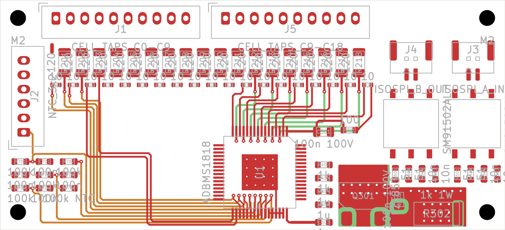

Q301 heat on a small board
R302 now takes about a third of the drop, which leaves Q301 about 1.05 W on roughly 119 mm² of copper per layer, four layers. Is that enough for a SOT-223 in a closed battery box, or should it be a DPAK from the start?
Update · November 11, 2026
An ADBMS1818 cell monitor for 18 Li-ion cells, with passive balancing and an isoSPI daisy chain to a separate master. One schematic makes two boards: Guard, with hot-plug protection for the bench, and Lean, without it. Lean is being shrunk so that one day two of them can share a 156.5 × 37 mm battery slot that is only 10 mm tall. It is now 70 × 32 mm on four copper layers, with every part placed on the front and both cell plugs still on the board. The 5 mm under the slot height is for connectors on the carrier. The first 29 of 88 nets are routed by script and pass DRC: the fan-in to the chip's top pins and the escape from its bottom pins, the two pieces most likely to fail at this height.

01 / Progress
Values from the ADBMS1818 typical application (Figure 112), plus isoSPI noise filtering and thermistor setup from a working reference board. Every deviation is written down with its reason.
ADBMS1818 symbol built from the datasheet pin table (65 pins, 0 mismatches). Transformer and NPN pad numbering checked against the manufacturers' drawings.
Every part has a value, footprint and JLC part number. ERC is clean, and a script checks all 272 pins against the wiring table.
All 90 footprints imported and grouped by block: cell inputs, balancing, supply, isoSPI A/B and connectors. Every pad's net matches the schematic.
Track widths per net type and spacing for up to 75.6 V between cells far apart in the stack, taken from IPC-2221B, plus a creepage gap across the isoSPI transformers.
A 250 mA fuse on every cell tap, a 6.8 V zener across each cell input pair, an 85 V TVS on the supply, 14 test points and 4 mounting holes, following ADI's own slave reference design (AN-2093). 58 parts, all checked into the PCB.
The ENNOID master's public firmware sends only commands that match the ADBMS1818 datasheet when set to LTC6813-1, so no custom firmware is expected. It leaves the spare GPIO pull-downs off, so GPIO5–9 are now tied to V− instead of floating. A bench test with one slave is the real proof.
J3/J4 are now JST GH 2P like the master, with not-fitted JST PH footprints J6/J7 beside them for a PH header or bare wires. All connectors sit in one row centred on the top edge, IN on the left and OUT on the right, each transformer about 5 mm from its plug, and a mounting hole in every corner.
J3/J4 are now the top-entry JST GH (BM02B-GHS-TBT), so the plugs come in from above and the ports no longer need the board edge. Both ports moved to the right edge next to U1, which turned 270° so its isoSPI pins face them: each transformer is about 3.4 mm from its plug and about 1.5–2 cm from the chip, and the two pairs don't cross. U1 now renders with its 3D body.
A script turns the Guard schematic into Lean: no tap fuses, zener clamps, TVS or cell-input caps, 93 parts instead of 150. A net tie keeps the C0 sense wire on its own trace, and DRC flags any other copper joining it to ground.
A card in the dashboard lays out all 18 channels as one staggered row under the cell plugs, in the chip's pin order, so no tap trace has to cross another. The long-term battery slot is drawn on the board as a dashed outline.
Balance resistors went from 2512 to 2010, so the row shrinks from 77 to 62 mm, and the isoSPI transformers to the Bourns SM91502AL: half the area, still 1000 VDC working. A script places the whole board from a few numbers, so each try takes seconds. Everything fits except isoSPI port A.
Lean dropped the not-fitted PH footprints J6/J7 (Guard keeps them), so it is 91 parts and its isoSPI cable is GH only, like the master's. Each port is now one strip right of U1: four small resistors and caps, the transformer, then the GH plug at the board edge, port B above port A. Nothing waits beside the board, and the 2 mm isolation gap holds in DRC, also between the two ports.
The ten probe loops became bare 1.5 mm pads like the four high-voltage ones, and all 14 now sit on the back. That frees about 23 × 6 mm of front copper and leaves no test-point parts to order. The cost: probing is from the underside, and the back needs standoffs because four pads carry 25–75 V. Guard keeps its loops on the front.
The front parts take 1,764 mm² of courtyard: half of the 70 × 50 mm board, and 72 % of the 70 × 35 mm goal before any trace. The biggest blocks are the balance resistors, the two isoSPI ports, the cell plugs and the 10 Ω resistors. Try 2 also can't be routed as placed: nine traces from channels 14–18 would have to pass a 1.6 mm slot above isoSPI port B.
Balance current drops to about 30 mA: 120 Ω in 1206 instead of 33 Ω in 2010, and the 10 Ω resistors go from 1206 to 0603. That is the value the working reference board uses, and its designer would also pick a smaller 10 Ω part today. Mounting holes become M2, the board gets four copper layers, and Lean loses its test points. Parts stay on the front, so the board can sit flat on a carrier. The transformers stay a few mm from the chip: the reference board runs that way without link errors, with the same split termination and centre-tap caps we use.
The new parts are in the schematic and on the board: 120 Ω balance resistors in 1206, M2 holes, no test points, 77 parts. The 18-channel row sits under the cell plugs at 2.4 mm pitch with the chip under its right half, the thermistor plug stands on the left edge and both isoSPI ports are top right. 37 mm is the slot's own height; 35 mm was not reached with the plugs on the top edge.
On Lean the resistor in the regulator transistor's collector went from 100 Ω to 1 kΩ in a 1 W package. At 75.6 V and about 22 mA it takes about 0.5 W, so the transistor drops from about 1.5 W to about 1.05 W. At a 45 V stack and the chip's 35 mA peak the collector still sits 10 V above ground, and the datasheet asks for 6 V. This is our own change from the datasheet's 100 Ω. The board went to four copper layers, with a copper area for the transistor's collector on all four, joined by vias.
The cell plugs stay on the slave, and the carrier should hold connectors above it, so 5 mm had to come off. With the try 3 parts only 3.7 mm was left for traces above and below the chip. The 10 Ω series resistors became 0402 lying down (2 mm), the strip under the plugs lost 0.5 mm, and the chip moved to 1.3 mm from the bottom edge. The regulator transistor now stands on end beside the chip, because the space under the isoSPI parts is too low for it lying down. Its copper area is smaller than at 37 mm, so it will run hotter.
A script draws the traces from the pad positions, so it can run again after any placement change. Channels 11–18 reach the chip's top pins on two layers: the eight sense lines on the front, the seven balance lines through vias on an inner layer. Eight bottom pins fan out to one row of vias under the chip and leave on the other inner layer; two more and the 5 V supply use the 1 mm strip between the chip and the board edge. 29 nets, 221 track segments, 30 vias, no clearance or short errors in DRC.
Still open on the board: channels 3–10 down the chip's left side, the taps from the plugs to the resistor rows, both isoSPI ports, the regulator's own connections, the reference and bias parts, the thermistor wiring and the ground pour. Three of these need an inner layer at this height. If one of them does not fit, the 70 × 37 mm placement is kept as the fallback.
A resistor-ladder cell simulator and isoSPI dongle on the bench, a carrier for two slaves on the Funwheel harness, then the master in its own box.
02 / The board today
29 of 88 nets are routed; the picture shows copper, not a 3D render. Not routed: channels 3–10, the taps from the plugs, isoSPI, the regulator, the thermistor wiring and the ground pour. At 32 mm three of those need an inner layer: the regulator's base drive, one isoSPI pair, and the top-of-stack feed to R302. The first cell's sense line now runs 48 mm on an inner layer, which should be reviewed before ordering. The transistor's copper is about 119 mm² per layer where its datasheet rates 625 mm², so its temperature is an estimate until a board is measured. No stack-up or copper weight is chosen yet. Guard stays at 120 × 70 mm with its protection parts. The Board Boxes snapshot and the schematic PDF on this site are older than this page.
03 / Part choices
An 18-cell monitor with isoSPI and internal balance switches (4 Ω typ, 10 Ω max). The exposed pad is V− and must be soldered. The symbol was built from the datasheet pin table, and the netlist was checked pin by pin.
The chip ↗120 Ω in 1206: about 30 mA per cell and 0.12 W each, half the part's 0.25 W rating. All 18 balancing at once put about 2.3 W into the board instead of 6.7 W. The 10 Ω resistors carry the same current, about 0.01 W each. They went to 0603 on Nov 10 and to 0402 on Nov 11: lying down they fit the 2.4 mm channel pitch and make the row 2 mm lower, which the 32 mm board needed. Guard keeps 33 Ω in 2512 and 10 Ω in 1206.
Sizing table ↗Half the area of the HM2113ZNL (10 × 8 mm footprint, 5.7 mm tall), with the choke built in and the same 1000 VDC working rating that the ~76 V between modules needs. Its pins match the old part one for one, so no wiring changed. The tiny 4.5 × 3.2 mm LAN transformers were rejected: they state no working voltage.
Variants and reasons ↗Corrected on Nov 6: the balance current also flows through the next cell's 10 Ω filter resistor (datasheet Fig. 99), so it is about 89 mA, 0.26 W each at 4.2 V, 26 % of the rating. All 18 at once is about 6.7 W, so firmware should balance odd and even cells alternately. The die thermal budget is still open.
Sizing table ↗Q301 drops the stack to the 5 V VREG. With the datasheet's 100 Ω collector resistor that is about 1.5 W at 75.6 V, and its 3 W rating only holds on 52 × 52 mm of 2 oz copper. Lean has no room for that, so R302 is 1 kΩ in a 1 W 2512 and takes about 0.5 W of it; Q301 is left with about 1.05 W. The collector stays 10 V above ground at a 45 V stack and the chip's 35 mA peak current (the datasheet asks for 6 V). This value is our own proposal, not the datasheet's. Guard keeps 100 Ω. A DPAK part is the fallback if the first board runs hot.
Deviation 14 ↗The datasheet's HX1188FNL is rated only about 60 V working, and adjacent 18S modules sit about 76 V apart. The HM2113ZNL has a built-in choke and is AEC-Q200. The 2 × 51 Ω split termination and 10 nF centre-tap caps keep the link working while the motor runs.
Transformer notes ↗Two 10-pin cell-tap headers sharing C9, so each harness half keeps its own reference, and a 6-pin header for three cell NTCs. The friction lock may need RTV against vibration.
Connector pinout ↗The bought ENNOID master uses JST GH 2P for isoSPI, so J3 (in) and J4 (out) are BM02B-GHS-TBT top-entry headers and its cable plugs straight in from above. GH is rated 50 V, which only has to hold the small signal between its two pins; the 2 mm isolation gap on the PCB holds the rest. J6/J7 are JST PH footprints wired in parallel and left empty, for a PH header or two soldered wires. Since Nov 9 only Guard has them: both ports fit Lean's 70 mm board only without them.
Connector notes ↗Guard has ten Keystone probe loops and four bare high-voltage pads on the front. On Lean all 14 are bare pads on the back: no part to buy or solder, no height, and the front keeps its room for the circuit on a board that has to get smaller. They are the only footprints on the back. The isoSPI pads TP7–TP10 add a short stub to the chip-side lines, so they may come off the final board. Decided on Nov 10: try 3 drops all 14 from Lean. The reference board has none, the same nets can be probed on a resistor or capacitor pad, and pads on the back can't be reached once the board sits flat on a carrier.
Variants and reasons ↗The harness pins mate in random order, and the chip allows only 8 V between neighbouring cell inputs. A 6.8 V zener across each pair keeps it there. A 250 mA fuse on every tap means a shorted part or a slipped scope probe can't pull pack current through the board. The top and bottom supply get their own fuses, so the chip's current doesn't show up as error on cells 1 and 18. An 85 V TVS protects V+ and the regulator NPN. The 10 Ω filter resistors moved to 1206 because they carry the balance current.
Protection and sources ↗100 kΩ pull-up to VREF2 and 100 nF on each GPIO. Three cell NTCs on GPIO1–3 and one onboard 0603 NTC on GPIO4.
Deviations ↗04 / Review focus
R302 now takes about a third of the drop, which leaves Q301 about 1.05 W on roughly 119 mm² of copper per layer, four layers. Is that enough for a SOT-223 in a closed battery box, or should it be a DPAK from the start?
At 32 mm the first cells' sense and balance lines leave the chip through vias under it and run up to 48 mm on an inner layer, side by side. Is that a measurement risk for cell 1, and does it want a ground layer next to it?
Each slave should work alone on a harness, or sit flat on a carrier and be soldered to it through the plug holes. Is soldering through the JST pin holes a sound joint, and how should the isoSPI ports reach the carrier?
Are the tap fuses, zener clamps and TVS enough for plug-and-play? And the pin order against the Funwheel pack.
Morale department
The penguins are not allowed near the balance resistors.
05 / Feedback
Name the part or board area and say what you'd change or check. If you drew boxes in Board Boxes, paste its copied prompt. GitHub opens a feedback form, so your notes stay with the project.
Open feedback form ↗You need a GitHub account to submit an issue. Please don't include private or personal information.Engineering draft. Nothing here is validated for manufacture or for use on a real pack.